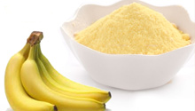
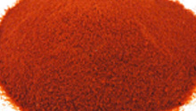
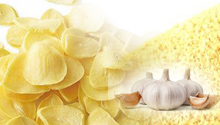
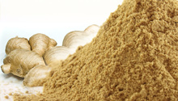
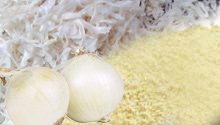

All our products are derived from freshest vegetables.
TOMATO PASTE/PUREE/KETCHUP
Selected tomatoes are sorted, treated, pulped and evaporated by special technology to retain the natural flavour and taste.
BANANA POWDER
The processing of banana into banana powder involved as dipping in warm water, peeling, slicing, blanching, pulping, dilution and filtering.
The filtered banana juice was spray dried to get the banana powder.
Banana powder could be utilized to partially substitute imported wheat flour for a number of products such as pancakes, doughnuts, and bakery products.
It is used as a component for production of milk shakes and baby foods.
It is also used in the manufacture of various types of cakes and biscuits.
NATURAL VINEGAR
We preset a wide range of vinegar for our client with good quality.
Our range of food herbal vinegar is processed from the finest quality ingredients
and can be used in adding taste to a variety of cuisines.
TOMATO POWDER
Our company processes Dehydrated Tomato Powder that is rich in taste and nutritional value.
Easy to use and store, the proposed powder is a perfect choice for improving the health.
It boasts levels of vitamin A, C, and K. Suitable for emergency food storage, camping and daily use,
this dehydrated tomato powder is provided in standardized packaging.
GARLIC PASTE/FLAKES/POWDER
We make high quality garlic paste from fresh and selected garlic of superior grade
GINGER POWDER
ONION FLAKES/POWDER
We, at Ark Industries are having the potential of providing optimum and quality dried onion products available in powder and flakes form in the market.
The highly facilitated infrastructure of ours supports the production of an assorted range of onion powders which are widely utilized as a substitute of
fresh onions. Dehydrated onion of the pungent variety is grounded finely which results in the production of onion powder in dehydrated form.